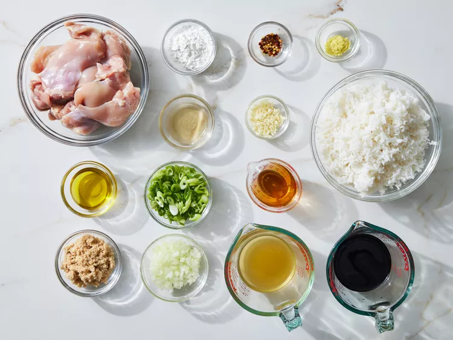
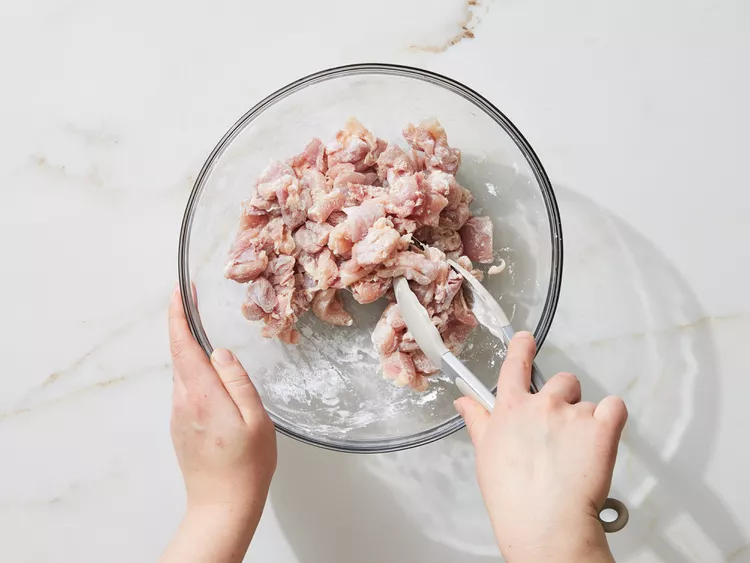
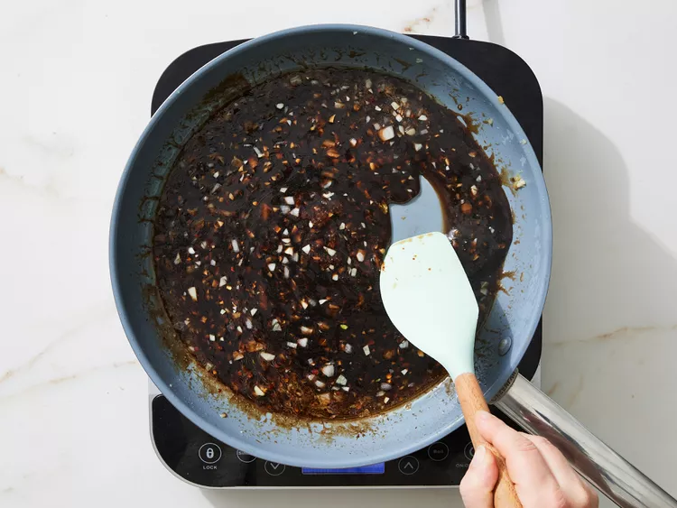
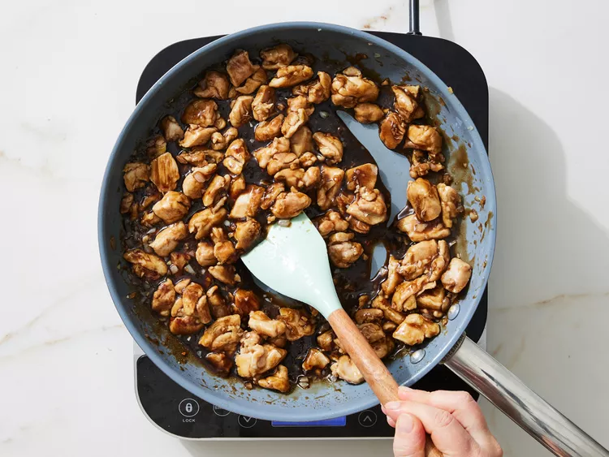
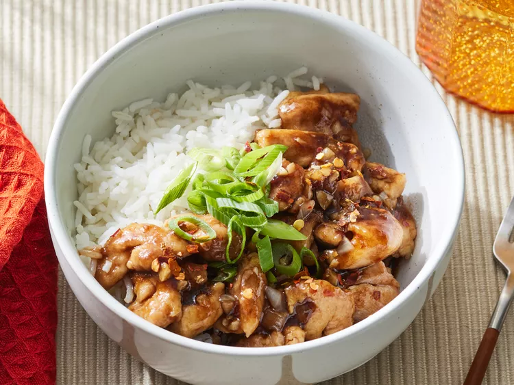

Bourbon chicken is a dish with New Orleans roots that's easy to make with chicken thigh pieces cooked in a sweet brown
sugar, bourbon, ginger, garlic, and soy sauce glaze. Serve with rice for a restaurant-worthy meal.
Step 1
Gather Ingredients.
Step 2
Toss chicken with 1 tablespoon cornstarch in a medium bowl.
Step 3
Heat 1 tablespoon oil in a 12-inch skillet over medium-high heat; add chicken. Cook and stir until browned; transfer to
a plate using a slotted spoon.
Step 4
Heat remaining 1 tablespoon oil in same skillet. Add onion, garlic, and ginger; cook and stir until softened and
fragrant, 1 to 3 minutes.
Step 5
Stir remaining 1 tablespoon cornstarch, soy sauce, broth, bourbon, brown sugar, vinegar, and crushed red pepper together
in a small bowl.
Step 6
Add sauce mixture to skillet; cook and stir until thickened and bubbly.
Step 7
Return chicken to skillet. Cook and stir until coated in sauce and heated through, about 2 minutes.
Step 8
Serve over rice. Top with green onions.
